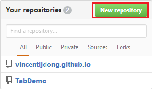
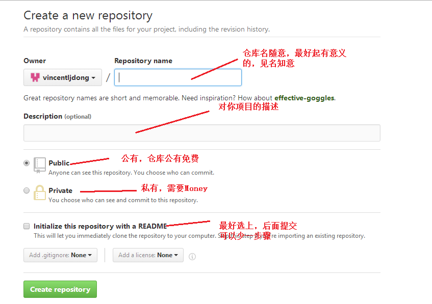
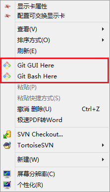
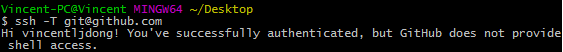
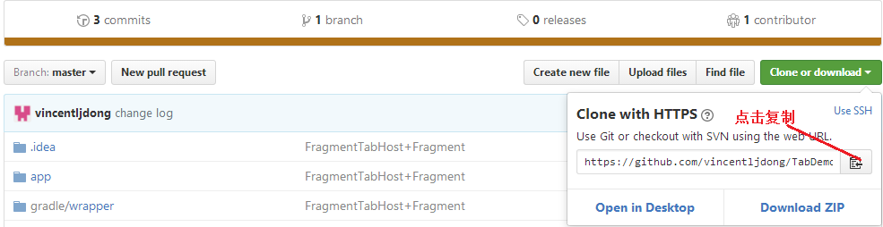

一气呵成的代码提交步骤，避开你所遇到的坑。
向GitHub提交代码首先我们要注册一个GitHub账号，这个就不掩饰了，很简单一步一步来就OK。
建立仓库
登录你的账号，创建仓库repository，英语不错的同学可以看这个https://help.github.com/articles/create-a-repo官方的帮助文档,点击New repository

进入界面后填写相关信息，如下：

下载Git
点这里Git进入官方下载,安装成功后在桌面右击你的鼠标会出现如下两个表示成功：

以下进入命令行
在初始化版本库之前，先要确认认证的公钥是否正确，这里就不演示公钥的创建和添加，不会的同学自己可以去查一下资料，如下：
ssh -T git@github.com

显示如上表示正确
- clone仓库，类型SVN的CheckOut

git clone https://github.com/vincentljdong/TabDemo.git(后面url改为你自己的)
提交文件（依次执行如下命令）
git add . git commit -m 'first_commit' git remote add origin https://github.com/vincentljdong/TabDemo.git git push origin master
如果执行git remote add origin https://github.com/vincentljdong/TabDemo.git，出现错误：
fatal: remote origin already exists
接着执行
git remote rm origin
git remote add origin https://github.com/vincentljdong/TabDemo.git
如果在执行git push origin master时，不出意外会直接弹出对话框需要你输入账号密码等待提交成功后就OK了，如果报错：
error:failed to push som refs to.......
则执行以下命令：
git pull origin master
好了，这篇文章就到这里，如果有不懂的同学可以留言。
联系方式：lijiandongv@163.com 有什么问题或者建议欢迎留言到我的邮箱
每日一碗鸡汤 不要羡慕别人，你的劣势可能是你最大的优势。